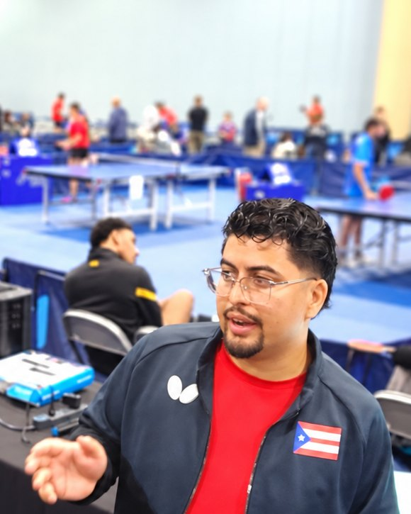

Modernizar el tenis de mesa competitivo en Puerto Rico con gestión profesional de torneos, tecnología propia y apego a los estándares de la ITTF, para dar más visibilidad y calidad operativa a jugadores, ligas y eventos.
TENIS DE MESA PUERTO RICO
Más alládel juego.
Digitalizamos procesos, conectamos información y transformamos la gestión del tenis de mesa. Una visión que une tecnología, dirección técnica y experiencia real en competencia.
Fundado y dirigido por Joel Vega
Explora hacia abajoPlataforma en evolución
01 /Información conectada
Ratings, récords, perfiles y datos deportivos con continuidad.
02 /Operación técnica
Mesas técnicas, coordinación arbitral y gestión de competencias.
03 /Experiencia digital
Menos procesos aislados y mejores caminos para atletas y organizadores.
EL TRABAJO EN ACCIÓN
De la planificación a cada mesa.
Detrás de una jornada de competencia hay coordinación, documentación, personal técnico y decisiones que también pueden mejorarse con tecnología.

ÁREAS DE TRABAJO
El trabajo detrás del deporte.
Una misma visión aplicada a necesidades distintas: federación, torneos, liga universitaria y nuevas plataformas deportivas.
01 / TTMPR
Federación Puertorriqueña de Tenis de Mesa
La dirección técnica de Joel Vega en la FPTM: competencias, mesa técnica, arbitraje, siembra, ratings, membresías y comunicación.
Conocer más 02 / TTMPRDigitalización de los torneos
El centro de todo: sistemas de clasificación, registros, datos y herramientas que conectan la operación deportiva.
Conocer más 03 / TTMPRLiga Atlética Interuniversitaria
Dirección técnica, mesa técnica, árbitros, resultados, estadísticas y crónicas periodísticas de la temporada LAI.
Conocer más 04 / TTMPRKileaaa
La plataforma de torneos y ligas en desarrollo: inscripciones, cuadros, marcador en vivo, perfiles y ratings en un mismo lugar.
Conocer el producto 05 / TTMPRFuturos proyectos
Ideas y próximos desarrollos, incluido TTMPR Live como concepto futuro, no como servicio existente.
Explorar visiónMISIÓN · VISIÓN · VALORES
Desde la mesa de competencia hacia la plataforma digital.
TTMPR (Tournaments & Technology Management Puerto Rico) entiende primero el deporte y, después, diseña mejores soluciones para él.
Hacer de Puerto Rico un destino líder del tenis de mesa competitivo en el Caribe, con desarrollo sostenible de jugadores, participación de patrocinadores y un crecimiento basado en la transparencia.
Nuestros valores
01
Excelencia operativa
Competencias operadas con estándares internacionales.
02
Tecnología con propósito
La tecnología como ventaja competitiva, no como novedad.
03
El jugador primero
Experiencias pensadas desde la perspectiva del atleta.
04
Decisiones con datos
Decisiones transparentes, sustentadas en información.

Joel VegaFundador y Director Técnico
EL FUNDADOR
Experiencia en la mesa y fuera de ella.
Joel Vega suma más de 15 años en el tenis de mesa. Desde 2026 es Director Técnico de la Federación Puertorriqueña de Tenis de Mesa (FPTM) y del programa de tenis de mesa de la Liga Atlética Interuniversitaria (LAI).
En lo profesional, es reclutador ejecutivo, con un MBA y más de 8 años de experiencia en operaciones de personal, desde startups hasta empresas Fortune 500. Actualmente cursa un Ph.D. en Gerencia Estratégica e Innovadora.
- Director Técnico FPTM
- Director Técnico LAI
- MBA
- Ph.D. en curso · Gerencia Estratégica e Innovadora
- Reclutador ejecutivo
- 15+ años en el tenis de mesa
SIGUIENTE
Conoce cómo se lleva una competencia de la planificación a la ejecución.
Conoce otra parte del ecosistema que impulsa TTMPR.